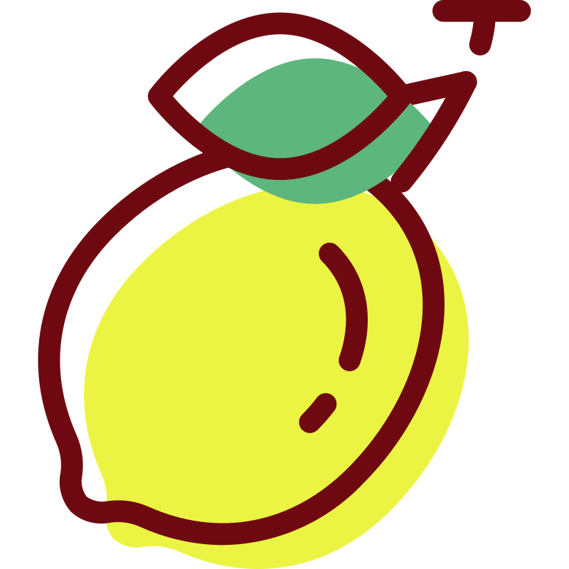
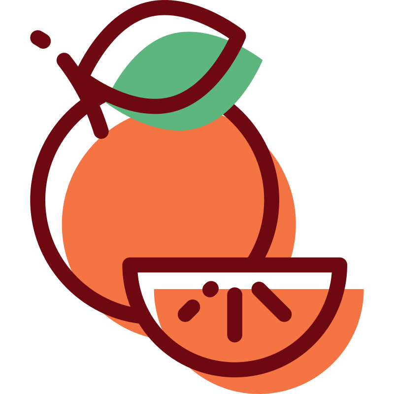

Reading & Vocabulary
Reading & Vocabulary
1. Reading
Creative Hobbies
Many people enjoy doing creative things in their free time. Some love drawing or painting, while others like playing music, taking photos or writing stories. You don't need a special talent to start a new hobby.
At first, it is hard to get everything right. Because of this, many beginners avoid showing their work to other people. They are afraid of making mistakes. However, mistakes are a normal part of learning, so experts suggest practising a little every day and not giving up.
After practising a new skill for a few weeks, beginners get better and start having more ideas. That is why creative people often keep a small notebook. When they find a good idea, they don't mind spending hours on it, because making something new is relaxing. And when they finally finish working on the project, they feel happy and proud.
- Which creative hobbies does the text mention?
- Why do many beginners avoid showing their work? What are they afraid of?
- What do experts suggest?
- What happens after practising for a few weeks?
- Why don't creative people mind spending hours on one project?
- In your opinion, which creative hobby is the most useful/fun to learn? Why?
2. Vocabulary
A. Which word?
Прочитай ситуацію й назви одне слово з тексту (та його переклад українською), яке підходить за змістом.
| Situation | Word | Ukrainian |
|---|---|---|
| 1. Sam used the wrong colour in his picture by accident. What was it? | ||
| 2. Anna is very good at the guitar, and she teaches other people. What is she? | ||
| 3. Tom started drawing last week. What is he? | ||
| 4. Lisa plays the piano well because she practised for three years. What does she have? | ||
| 5. Max sings very well, and nobody taught him. What does he have? | ||
| 6. Kate is making a video. It takes two weeks, and she has a plan. What is it? | ||
| 7. You think of a new story for your comic book. What do you have? | ||
| 8. Ben always thinks of new and interesting things. How can you describe Ben? |
B. Say an example
Вигадай свої приклади (кілька слів або повне речення) для цих слів. Приклади мають бути на тему творчих хобі.
| Word | Your example (about creative hobbies) |
|---|---|
| 1. skill | |
| 2. suggest | |
| 3. proud | |
| 4. avoid |
 Grammar
Grammar
1: Що таке герундій
Що це. Герундій (gerund) — це форма дієслова з закінченням -ing, яка називає дію як щось, про що можна говорити, подібно до іменника. Українською його зазвичай перекладаємо інфінітивом (малювати) або іменником (малювання):
- Drawing is fun. (Малювати цікаво.)
- She enjoys drawing. (Вона любить малювати.)
Чим відрізняється від Present Continuous: форма та сама (-ing), але функція різна.
- She is drawing now. (Present Continuous: дія відбувається зараз, перед дієсловом стоїть is / am / are.)
- She enjoys drawing. (Герундій: -ing стоїть після іншого дієслова.)
Як утворити: до дієслова додаємо -ing.
| Правило | Приклад |
|---|---|
| Зазвичай просто додаємо -ing | draw → drawing, play → playing, paint → painting |
| Дієслово закінчується на німу -e: відкидаємо e | make → making, take → taking, write → writing |
| Односкладове дієслово з однією голосною і приголосною в кінці: подвоюємо приголосну | run → running, swim → swimming, plan → planning |
Заперечення: not ставимо перед герундієм — experts suggest not giving up.
Після яких дієслів стоїть герундій
Після певних дієслів друге дієслово має форму -ing, і це не залежить від контексту. Розділимо їх на 5 груп за значенням:
| Група | Дієслова / конструкція | Приклади |
|---|---|---|
| 1. Подобається / не подобається |
like,
love,
enjoy
(отримувати задоволення), prefer (надавати перевагу), hate, can't stand (терпіти не можу), not mind (бути не проти) |
Many people enjoy doing creative
things. Some love drawing, while others like playing music. I don't mind spending hours on a project. Do you mind waiting? (Ти не проти зачекати?) |
|
2. Етапи дії (початок → процес → кінець) |
start,
begin
(починати) keep (продовжувати) finish (закінчувати), stop (переставати), give up (кидати, здаватися) |
Beginners start having more
ideas. He kept playing the same song. She finished drawing the poster. Don't give up practising! |
|
3. Окремі дієслова (треба просто запам'ятати) |
avoid
(уникати) suggest (радити, пропонувати) practise (практикуватися) imagine (уявляти) |
Beginners avoid showing their
work. Experts suggest practising every day. Imagine playing on a big stage! |
| 4. Проводити / марнувати час |
spend + [час] + -ing waste + [час] + -ing |
She spent two hours
drawing a comic book. Don't waste time worrying about mistakes. |
|
5. Вийти кудись позайматися (спорт, прогулянки, шопінг) |
go + -ing (не вживається з малюванням чи музикою) |
We go swimming every Sunday. They go cycling in the park. Let's go shopping! |
Примітка: після like, love, hate, prefer, start, begin можлива ще й інша форма (інфінітив з to). Її розглянемо окремо, а на цьому уроці використовуємо тільки герундій.
Exercises 1–3
Exercise 1. Retrieve (по пам'яті, усно).
Закрий теорію вище. Протягом 2 хвилин назви дієслова, які пам'ятаєш, у кожну з 5 груп, а потім склади з ними короткі фрази з герундієм (наприклад, avoid showing, finish drawing):
- Ставлення
- Початок / кінець
- Інші
- Час
- Go + -ing
Exercise 2. Translate into English (UA → EN).
- Вона закінчила малювати портрет.
- Він продовжував грати ту саму мелодію.
- Вони люблять фотографувати.
- Я не проти зіграти цю пісню ще раз.
- Експерти радять практикуватися щодня.
- Він уникає показувати свої малюнки.
- Вона провела дві години, малюючи комікс.
- Ми ходимо плавати щонеділі.
Exercise 3. Create 6 sentences.
Вигадай 6 речень про початківця, який малює (без імен — лише a beginner або he / she). Після кожного речення назви групу дієслова:
- кожне речення з іншим дієсловом із груп 1–3;
- щонайменше 1 речення зі spend / waste time;
- щонайменше 1 заперечне речення (doesn't mind, avoids, doesn't enjoy…);
2: Прийменники, підмет і сталі вирази
У блоці 1 форма -ing залежала від дієслова. Але герундій також вживається після прийменників, на початку речення (як підмет) і в кількох сталих виразах.
1. Після прийменника завжди -ing
Якщо перед дієсловом стоїть прийменник, ставимо тільки -ing (ніколи to + V1):
| Вираз + прийменник | Приклад |
|---|---|
| be good at (добре вміти) | She is good at drawing. |
| be interested in (цікавитися) | He is interested in taking photos. |
| be afraid of (боятися) | Beginners are afraid of making mistakes. |
| be proud of (пишатися) | I am proud of finishing the project. |
| think of (думати про) | They are thinking of making a video. |
| thank you for (дякую за) | Thank you for helping me. |
| look forward to (чекати з нетерпінням) | I look forward to seeing the show. |
У виразі look forward to слово to — це прийменник (до/на), тому після нього теж стоїть -ing.
Те саме працює зі словами-зв'язками after, before, instead of, without, by (українською вони часто перекладаються без прийменника):
| Прийменник | Приклад |
|---|---|
| after / before (після / перед) | After practising for a week, he played better. (Попрактикувавшись тиждень…) |
| instead of (замість того щоб) | Instead of watching videos, make one. (Замість того щоб дивитися… / Замість перегляду...) |
| without (без / не зробивши) | Don't show your work without checking it. (…не перевіривши її.) |
| by (як саме? завдяки дії) | You get better by practising. (…завдяки практиці.) |
2. Герундій як підмет
Герундій може стояти на початку речення і бути підметом. Дієслово після нього завжди в однині (is, а не are):
- Making something new is relaxing.
- Taking photos is fun.
3. Сталі вирази з герундієм
- be worth + -ing (варто): This film is worth watching.
- There is no point in + -ing (немає сенсу): There is no point in giving up after one mistake.
- It's no use + -ing (марно): It's no use crying about mistakes.
Exercises 4–6
Exercise 4. Find and fix.
Знайди помилку в кожному реченні й скажи правильну версію:
- She is good at to draw.
- After to finish the song, he started a new one.
- Beginners avoid to show their work.
- Thank you for to help me.
- Instead of to watch videos, make one.
- They don't mind to spend hours on a project.
Exercise 5. Combine into one sentence.
Об'єднай два речення в одне, використовуючи слово в дужках і герундій:
- Tom plays the guitar. He is good at it. (good at)
- Nora paints. She is interested in it. (interested in)
- Ben finished the song. Then he went home. (After)
- Anna doesn't buy new brushes. She draws with old ones. (Instead of)
- Max recorded the video. He didn't check the sound. (without)
- Leo got better. He practised every day. (by)
Exercise 6. Finish the sentences (two different ways).
Закінчи кожне речення двома різними способами:
- Many beginners are afraid of …
- A good teacher is good at …
- You should make a plan before …
- There is no point in …
- … is relaxing. (герундій як підмет)
- Instead of …, you can draw a comic book.

Speaking: Guess the CreatorGame Board & Question Bank
Один гравець загадує творця з таблиці, а інший ставить питання "так / ні", щоб його вгадати. Кожне питання має бути граматично правильним і містити герундій. Потім гравці міняються ролями.
12 Creators
Позначай галочкою творців, яких уже можна викреслити.
| # | Creator | Enjoys… | Avoids… | Is interested in… | Spending hours on a project | Is thinking of… |
|---|---|---|---|---|---|---|
| Ada | drawing | taking photos | playing the guitar | doesn't mind | making a comic book | |
| Ben | drawing | taking photos | playing the guitar | avoids | drawing a poster | |
| Cleo | drawing | playing the guitar | taking photos | doesn't mind | making a comic book | |
| Dan | drawing | playing the guitar | taking photos | avoids | drawing a poster | |
| Eva | taking photos | drawing | playing the guitar | doesn't mind | starting a photo blog | |
| Finn | taking photos | drawing | playing the guitar | avoids | taking photos at a concert | |
| Gina | taking photos | playing the guitar | drawing | doesn't mind | starting a photo blog | |
| Hugo | taking photos | playing the guitar | drawing | avoids | taking photos at a concert | |
| Ivy | playing the guitar | drawing | taking photos | doesn't mind | writing a song | |
| Jack | playing the guitar | drawing | taking photos | avoids | playing at a birthday party | |
| Kate | playing the guitar | taking photos | drawing | doesn't mind | writing a song | |
| Liam | playing the guitar | taking photos | drawing | avoids | playing at a birthday party |
Колонка "Spending hours on a project": doesn't mind = не проти витрачати години на один проєкт; avoids = уникає витрачати години на один проєкт.
Question Bank
| Що питаємо | Шаблон питання |
|---|---|
| що любить | Does the creator enjoy drawing / taking photos / playing the guitar? |
| чого уникає | Does the creator avoid drawing / taking photos / playing the guitar? |
| чим цікавиться | Is the creator interested in drawing / taking photos / playing the guitar? |
| час на проєкт | Does the creator avoid spending hours on a project? |
| про що думає | Is the creator thinking of making a comic book / starting a photo blog / writing a song / …? |
Можна також використовувати: love / like + -ing (замість enjoy), hate + -ing (замість avoid).
Stage 1. Warm-up: Describe 3 Creators
Вибери трьох творців із таблиці (наприклад, Ada, Finn, Kate) і опиши кожного у 2–3 реченнях:
Приклад (Ada): Ada enjoys drawing, but she avoids taking photos. She is interested in playing the guitar and doesn't mind spending hours on a project. She is thinking of making a comic book.
Stage 2. Round 1 — You Guess
Вчитель загадує творця, а ти ставиш питання і відгадуєш:
- Став лише питання "так / ні" про дані з таблиці (без питань про ім'я чи стать — завжди кажемо the creator).
- Використай питання обох типів: і з дієсловами (enjoy, avoid), і з прийменниками (interested in, thinking of).
- Якщо в питанні є граматична помилка — спочатку виправляємо його, а потім отримуємо відповідь.
- Після кожної відповіді назви, кого можна викреслити: "So it isn't Ada or Ben."
- Максимум 8 питань і 2 спроби на здогадку (I think the creator is …).
Stage 3. Round 2 — Grammar Detective
Тепер ти загадуєш творця, а вчитель ставить питання — і в частині питань навмисно робитиме граматичні помилки.
- Почула помилку — кажи "Stop!" і називай правильний варіант. Лише після цього відповідай "так" або "ні".
- Використовуй короткі відповіді: Yes, the creator does. / No, the creator doesn't. / Yes, the creator is. / No, the creator isn't.
- Кожна спіймана помилка = 1 бал. 4+ балів = звання Grammar Detective!

HomeworkHomework
Варіант A (стандартний):
- Повтори 5 слів, які були складними під час читання, і потренуй їхню вимову вголос.
- Напиши коротку історію (8–10 речень) про вигадану людину, яка пробує нове творче хобі.
- Умови: щонайменше 5 герундіїв, із них щонайменше 2 після прийменників (good at, after, instead of, by…).
Варіант B (retrieval): вивчи теорію вдома і на початку наступного уроку своїми словами поясни, що таке герундій і в яких 3 випадках він використовується, з прикладами.